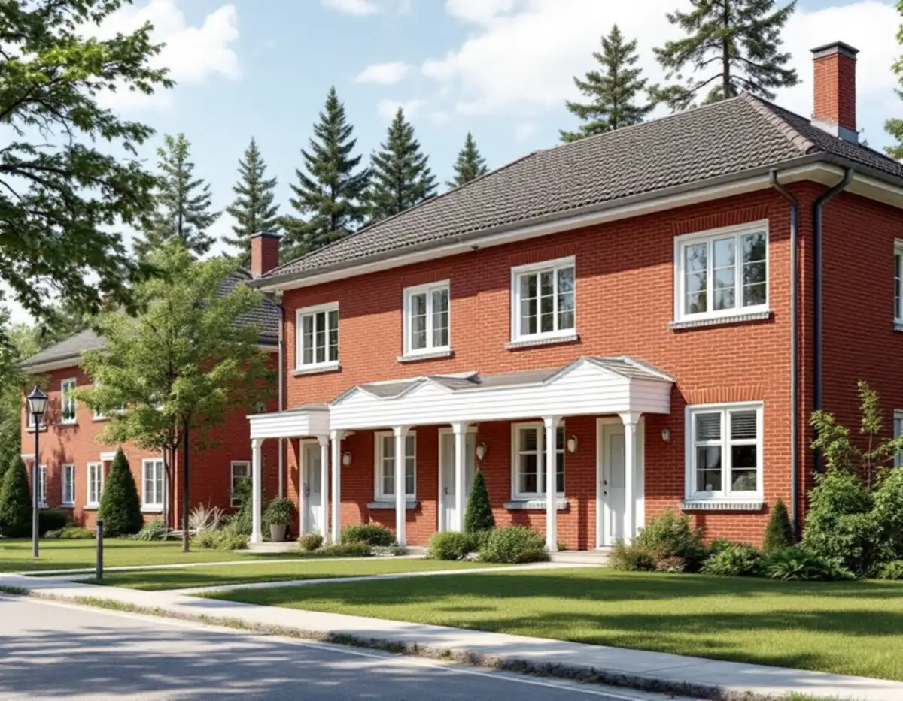
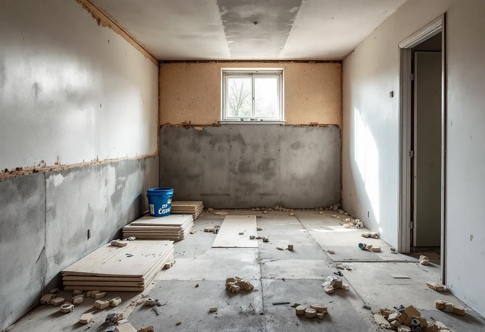
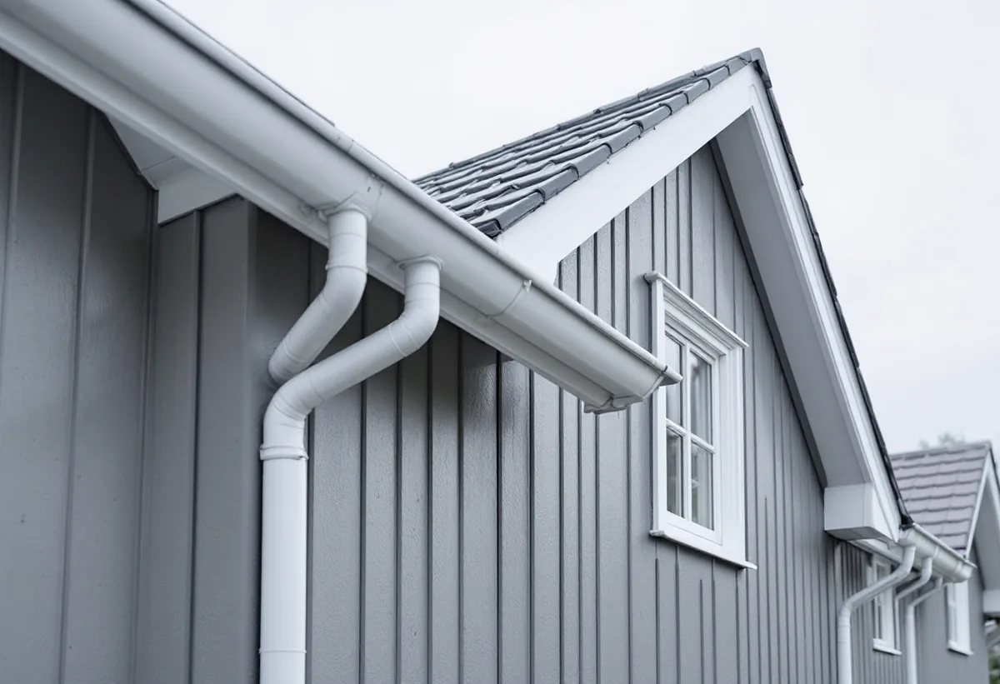

Platsbesök
Gratis besök där vi går igenom bostaden och dess ursprungliga detaljer.
Vällingby byggdes ut under 1950-talet som landets första ABC-stad och är riksintresse för kulturmiljövården. Geal Entreprenad AB renoverar hela radhuset, kedjehuset eller lägenheten och utgår från det som gör husen typiska för sin tid.

Stadens beskrivning av riksintressena berättar att Vällingby–Råcksta planerades som en självförsörjande förort, landets första så kallade ABC-stad – Arbete, Bostad, Centrum. Ingen skulle ha längre än 900 meters gångväg från bostaden till tunnelbanan. Området byggdes ut under 1950-talet och ses som ett sammanhållet uttryck för det årtiondet.
Bland de värdebärande karaktärsdragen nämns de ursprungliga husens gestaltning och byggnadsdetaljer som fönster, entrépartier, balkonger och räcken. Det är just de delarna som ofta byts vid en renovering. Vi försöker därför renovera dem i stället för att byta, och där byte är nödvändigt välja utförande som liknar originalet.

Enligt stadens områdesfakta för 2025 fanns 4 391 bostäder i Vällingby. 3 891 låg i flerbostadshus, och av de 449 småhusen var 228 bostadsrätter och 220 ägda. I flerbostadshusen fanns 1 848 bostadsrätter och 1 498 hyresrätter i allmännyttan. Även ett radhus kan alltså ägas av en förening.
Stadens vägledning för småhusområden beskriver hur tunnelbanestädernas radhus lades på bryn och platåer utanför centrum, mjukt anpassade till terrängen och ofta med en suterrängvåning. Den nedre våningen i ett suterränghus ligger delvis mot marken, och där behöver fukt och ventilation ses över innan nya ytskikt läggs.
Vägledningen nämner att många områden från tiden prövade nya material, och att asbestcement – mer känt som eternit – var populärt. Eterniten har i många fall bytts mot andra material, och i dag finns fasadskivor utan asbest som gör det möjligt att behålla husens uttryck.
Boverket skriver att asbest förbjöds i byggsektorn 1982 och att det främst är hus från 1940–1970 som innehåller den. Inkapslad asbest är ofarlig, men när materialet bearbetas frigörs fibrer. Inför en totalrenovering i Vällingby inventerar vi därför fasadskivor, golv, fix och rörisolering och låter sanera det som innehåller asbest innan rivningen börjar.
I en bostadsrätt är det föreningen som äger huset. Stockholms stad skriver att du behöver föreningens tillstånd för ändringar som påverkar bärande konstruktion, brandskydd, ventilation eller vatten och avlopp, och att anmälan och startbesked krävs när de tekniska egenskapskraven påverkas. Att flytta eller bygga ut kök och badrum inom lägenheten kräver ingen anmälan om inga sådana krav berörs.
Vi tar fram ritningar och en beskrivning av arbetet till styrelsen och planerar in renoveringen först när tillståndet finns. Enskilda rum beskriver vi under badrumsrenovering i Vällingby.

Gratis besök där vi går igenom bostaden och dess ursprungliga detaljer.
Misstänkt asbest provas innan något rivs.
Föreningens tillstånd och anmälan där det krävs.
Asbest saneras först, sedan rivs resten.
El, VVS och ventilation byggs om.
Golv, väggar, kök och bad, sedan gemensam besiktning.
I ett småhus räknar Skatteverket bland annat rivning av väggar, ny planlösning, tilläggsisolering, kakel och klinker och andra förbättringsarbeten som rotarbete. Avdraget gäller arbetskostnaden, inte material och resor.
I en bostadsrätt ger Skatteverket rotavdrag för arbete innanför lägenhetens tak, väggar och golv som du ansvarar för enligt stadgarna. Stambyten och arbete på gemensamma ytor som tak, fasader och trapphus ger inget avdrag för dig som bostadsrättshavare.
Avdraget är högst 30 procent av arbetskostnaden och högst 50 000 kronor per person och år. Äger ni bostaden två kan båda göra avdrag. Där avdraget gäller drar Geal det direkt på fakturan.
Om asbest behöver saneras, hur mycket som rivs, om detaljer som fönster och entré ska renoveras, el- och VVS-arbetets omfattning och fukt i en suterrängvåning. Efter ett gratis platsbesök får du ett skriftligt kostnadsförslag.
Renovera hela huset eller lägenheten.
Villarenovering →Takbyte, takbesiktning och plåtarbeten.
Takläggare i Vällingby →Radhusen i riksintresset Vällingby–Råcksta.
Takrenovering i Vällingby →Riksintresset och villaområdena.
Attefallshus i Vällingby →Riksintresset, radhusen och våtzonerna.
Badrumsrenovering i Vällingby →Bygga till i riksintresset.
Byggföretag i Vällingby →Puts från 1950-talet och kulör i riksintresset.
Fasadmålning i Vällingby →Tegel, puts och skivor på tunnelbanestadens hus.
Fasadrenovering i Vällingby →Radhus och kedjehus i riksintresset.
Fönsterbyte i Vällingby →Radhusens fönster.
Fönsterrenovering i Vällingby →Gamla mattor, lim och asbest.
Golvläggare i Vällingby →Lamellgolv, svikt och slitskikt.
Golvslipning i Vällingby →Kök i lägenheter och radhus.
Köksrenovering i Vällingby →Radhus och lägenheter i ABC-staden.
Målare i Vällingby →Takplåt, rännor och beslag i riksintresset.
Plåtslagare i Vällingby →Entréer, dörrar och räcken på radhusen.
Snickare i Vällingby →Kälvesta och husgrupperna.
Takbyte i Vällingby →Väggar från 1950-talet.
Tapetsering i Vällingby →Radhusen, riksintresset och lovet.
Tillbyggnad i Vällingby →